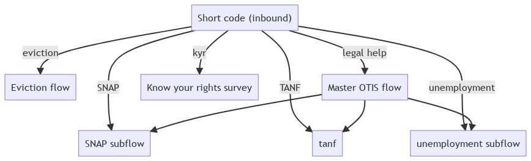
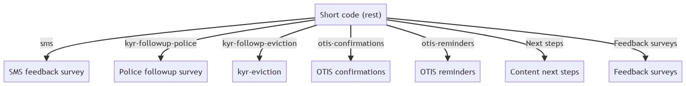

SMS Overview¶
We deliver many things over SMS. As of January 2022, we are in the process of applying for a short code that will serve as a master landing spot for all of our SMS transactions. When this is implemented, the short code will route traffic as indicated below.
Inbound messaging¶
Inbound messaging relies on a keyword being texted to the number and then routed correctly.
The core function of the short code for inbound messaging will be to route people into OTIS. We currently have 4 defined flows: OTIS-english, OTIS-spanish, Eviction-english, Eviction-spanish.
Keyword |
Flow |
|---|---|
eviction |
Eviction Help (English) |
desalojo |
Eviction Help (Spanish) |
ayuda legal |
OTIS (Spanish) |
kyr |
Know your rights initial survey |
All other inbound |
OTIS (English) |
In the future, we will break the flows out within OTIS to support substantive keyword routing like the one below:
REST-based messaging¶
We will also use the short code to deliver system-based messages. These are sent over REST from the website or Zapier-based transactions to specific flows. Currently, we use REST for reminders, the SMS feedback survey, and Know your rights (KYR) follow up surveys.
REST App |
Flow |
Status |
|---|---|---|
sms |
SMS follow up survey |
Built as flow |
kyr follow up surveys |
KYR surveys |
Built as flow |
Otis confirmations |
N/A |
Built in code |
OTIS reminders |
Not yet built |
In backlog |
Next steps from content |
Not yet built |
Not defined |
Feedback surveys |
Not yet built |
Not defined |
Note
The built in code will need to be migrated to a flow to be handled correctly.
This is the envisioned RESt system:
Mermaid code for images¶
This code below can be used in a Mermaid editor to create new images.
graph TD
sc["Short code (inbound)"] -->|eviction| ev
ev["Eviction flow"]
sc --> |"legal help"| otis
otis["Master OTIS flow"]
sc -->|SNAP| snap
otis --> snap
snap["SNAP subflow"]
sc -->|TANF| tanf
otis --> tanf
unemployment["unemployment subflow"]
sc -->|unemployment| unemployment
otis --> unemployment
unemployment["unemployment subflow"]
sc --> |kyr| kyr
kyr["Know your rights survey"]
graph TD
sc["Short code (rest)"] -->|sms| ev
ev["SMS feedback survey"]
sc --> |kyr-followup-police| kyr-police
kyr-police["Police followup survey"]
sc --> |kyr-followp-eviction| kyr-eviction
sc --> |otis-confirmations| otisc
sc --> |otis-reminders| otisr
otisr["OTIS reminders"]
otisc["OTIS confirmations"]
nextsteps["Content next steps"]
sc --> |"Next steps"| nextsteps
fb["Feedback surveys"]
sc --> |Feedback surveys| fb